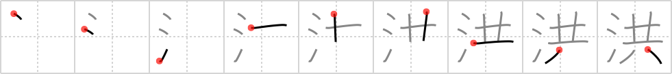

洪
← →
deluge

Reading:
On-Yomi: コウ
Heisig story:
Water . . . strung together.
Koohii stories:
1) [Django] 1-10-2007(198): Water plus Noah's Ark equals deluge.
2) [Raichu] 14-4-2007(121): Lots of water coming together is called a deluge.
3) [elmaestrokgb] 29-7-2009(11): Even as the water was rising, somehow Noah got together all the right animals before the deluge began in earnest.
4) [mantixen] 9-10-2008(6): I downed my chicken caesar salad with a deluge of water, and it was delugious!
5) [jonusbalonus] 7-5-2013(2): The deluge of water was expected, and all were safe together aboard Noah's Ark.